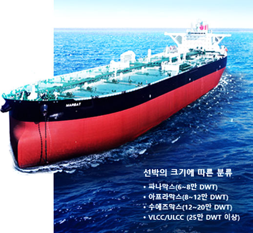
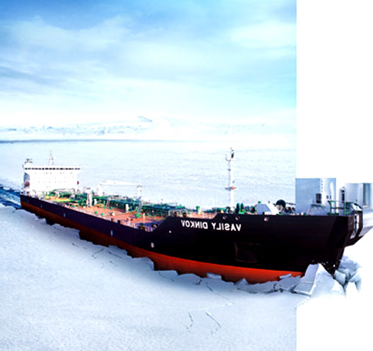
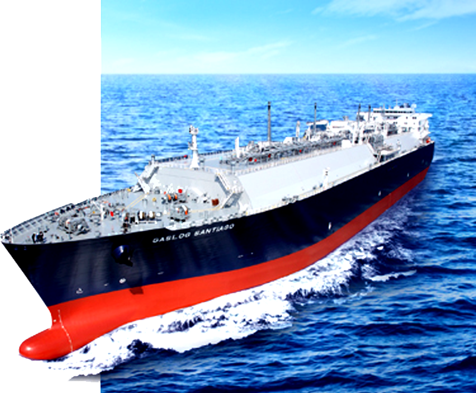
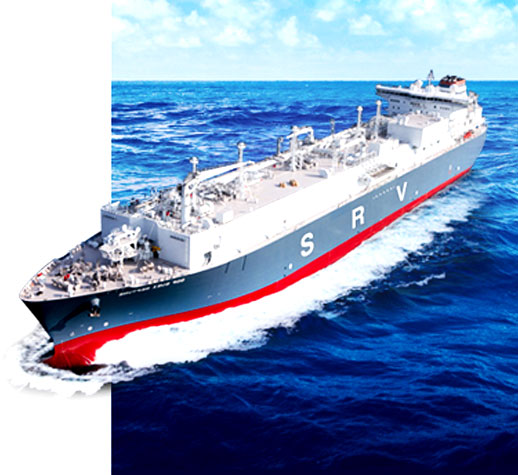
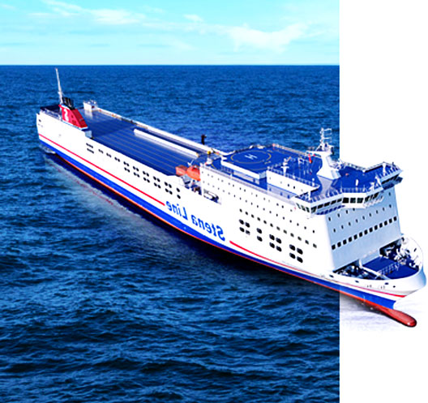

-
유조선 친환경 기술을 자랑하는 원유운반선
유조선은 원유를 운송하는 원유운반선, 정제과정을 거친 석유제품을 운송하는 정유운반선,
그리고 FPSO 등 해양생산설비에서 생산한 원유를 육상기지로 운송하는 셔틀탱커가 있습니다. 삼성중공업은 1992년 세계 최초로 아프라막스급 이중선체 유조선을 건조한 바 있으며,
친환경 선박 개발을 위해 지속적으로 노력하고 있습니다.셔틀탱커는 높은 파도와 바람, 조류의 영향을 받는 해상에서 일정한 위치를 유지하며 원유생산설비에 안정적으로 접안할 수 있도록 첨단 위치제어 장비가 탑재되어있는 고부가가치 선박입니다. 삼성중공업은 전세계 셔틀탱커 106척 중 46척을 수주해 시장점유율 43.4%를 기록하며 이 분야에서 1위를 수성하고 있습니다.
-
쇄빙유조선 극지 원유 운송의 새 지평, 양방향 쇄빙유조선
삼성중공업은 2007년 세계 최초로 7만톤급 극지운항용 전·후진 양방향 쇄빙유조선를 건조하였고 이 후에도 7척을 추가로 수주하는데 성공했습니다.
이 선박은 최대 두께 1.4m의 얼음을 깨고 시속 3.5노트 (knot)의 속도로 항해할 수 있으며, 영하 45도의 혹한에서도 견딜 수 있도록 설계됐습니다.
쇄빙유조선은 쇄빙선과 유조선을 하나로 결합하여 운송효율을 획기적으로 향상시킨 신개념 선박으로 평가 받고 있습니다.
-
LNG선 친환경 고효율 엔진으로 LNG선 시장선도
By successfully building this,
They showed advanced technology.LNG선은 영하 163도로 액화된 천연가스를 운반하는 선박입니다.
특히 2001년에는 기존 대비 운항성능과 연비가 뛰어난 '전기추진 LNG선'을, 2008·2009년에는 세계 최대 크기인 26만6천 입방미터급 LNG선을, 2013년 이후에는 연비를 혁신적으로 개선한 친환경 고효율 엔진 LNG선'을 각각 성공적으로 건조함으로써 앞선 기술력을 선보였습니다.
-
부유식 재기화설비 재기화설비 강자로 부상
LNG FSRU는 해상에 정박한 상태로 LNG 운반선으로부터 액화천연가스를 받아 저장하고, 이를 재기화하여 GAS 상태로 파이프라인을 통해 육상 수요처로 공급하는 LNG 수입 터미널입니다.
동남아를 비롯한 LNG 수요 증가로 FSRU 설비 수요 또한 증가하고 있습니다.
또한 당사는 재기화 시스템 국산화를 위하여 독자 기술로 S-Regas를 개발해 수주에 성공하는 등 다양한 재기화 시스템 및 선형 개발로 FSRU시장을 선도하고 있습니다.
-
대형 여객선 유럽형 대형 여객선의 지속적인 개발
삼성중공업은 지금까지 그리스 미노안(Minoan) ,네덜란드 노포크(Nofork) ,
스웨덴 스테나(Stena) 등으로 부터 총 9척의 여객선을 수주하면서
크루즈선 사업 진출 기반을 착실히 다졌습니다.또한 2009년에는 국내 최초로 LNG를 연료로 사용해 운항 중 발생하는 질소산화물과 황산화물 배출량을 각각 90% 이상 감축시킨 친환경 여객선을
개발하는 등 친환경 기술 연구에도 앞장서고 있습니다.